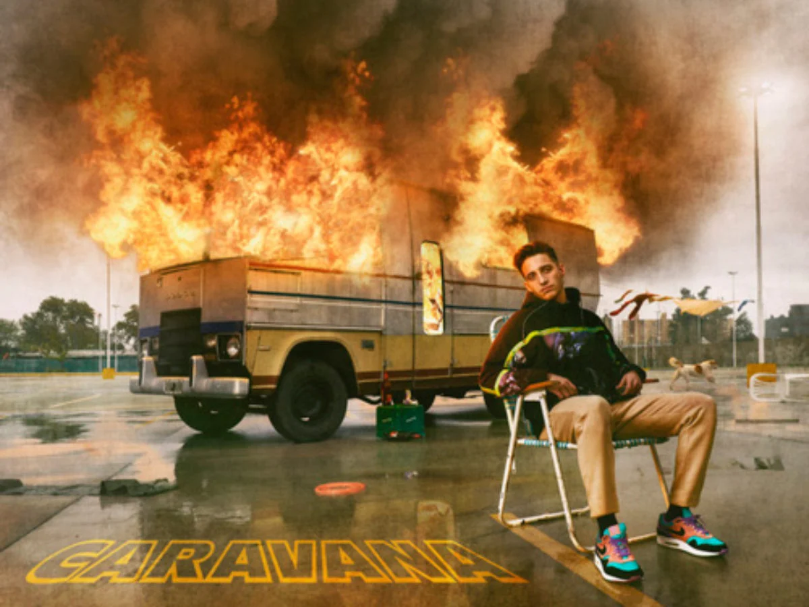
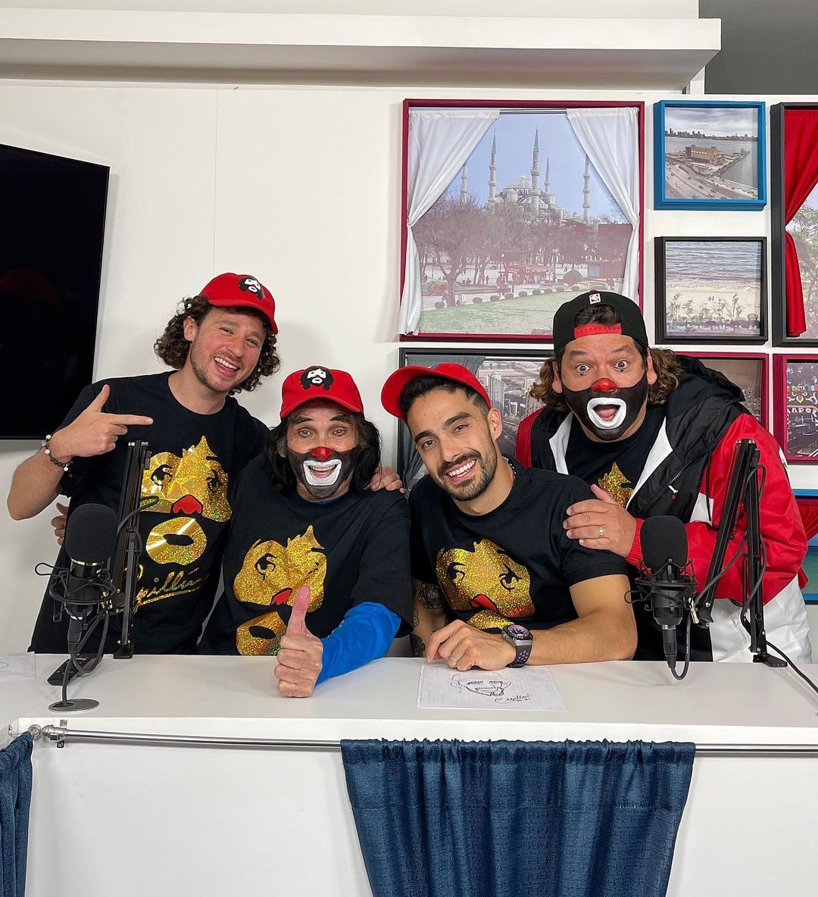

Música
Género |
Artista |
Nombre de la canción |
Año |
Duración |
Reproducciones |
Imagen |
|---|---|---|---|---|---|---|
Rock |
Wos |
Arrancamelo |
2022 |
3:25 minutos |
24 millones de vistas |
 |
Trapp |
Tiago PZK |
Dámelo |
2022 |
3:28 minutos |
1 millones de vistas |
|
Reguetton |
Bad Bunny |
Ojitos Lindos |
2022 |
4:18 minutos |
124 millones de vistas |
 |
Rock |
Bohemia Suburbana |
Peces e iguanas |
2016 |
4:25 minutos |
4 millones de vistas |
|
Trapp |
Bizarrap |
Quevedo |
2022 |
3.23 minutos |
80 millones de vistas |
 |
Entretenimiento

Entrevistas
Género |
Canal |
Nombre del video |
Año |
Duración |
Reproducciones |
Imagen |
|---|---|---|---|---|---|---|
Entrevista |
Roberto MTZ |
creativo #205 -RESIDENTE |
2022 |
53:33 minutos |
2 millones de vistas |
|
Entrevista |
Yordi Rosado |
JUANPA ZURITA, un CREADOR con MUCHA EXPERIENCIA | La entrevista con Yordi Rosado |
2021 |
1:29:37 |
2.8 millones de vistas |
|
Entrevista |
En Cortinas con Luisito y Berth - Podcast |
En Cortinas #36: Plática con el presidente de El Salvador Nayib Bukele |
2021 |
1:27:27 horas |
8.8 millones de vistas |
|
Entrevista |
Slobotzky |
La Cotorrisa - Episodio 39 Franco Escamilla |
2020 |
1:09:40 |
9 millones de vistas |
|
Entrevista |
En Cortinas con Luisito y Berth - Podcast |
En Cortinas #37: El mejor payaso de todos los tiempos FT. Cepillín |
2021 |
56:44 minutos |
2 millones de vistas |
 |